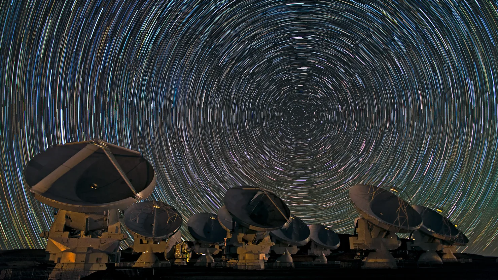
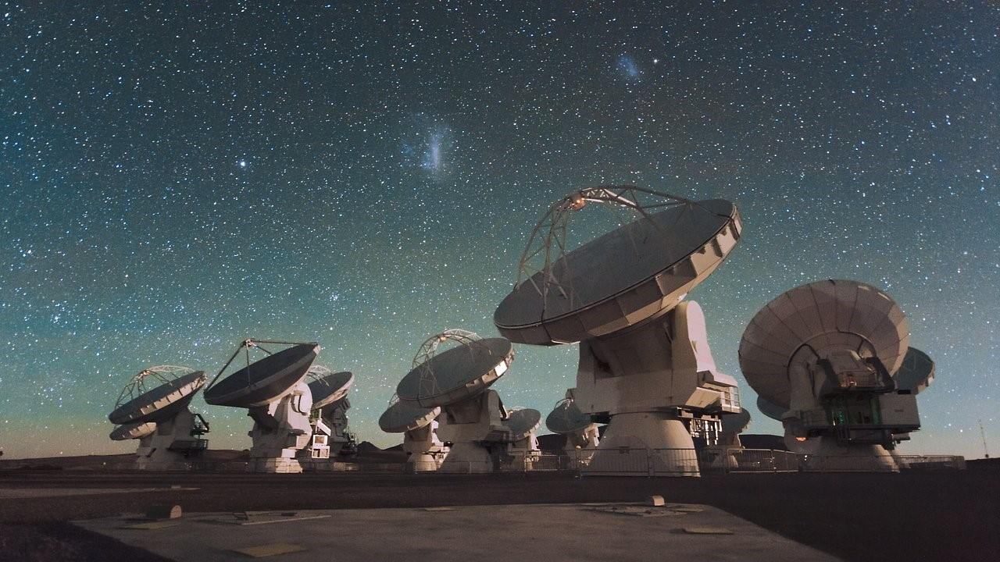
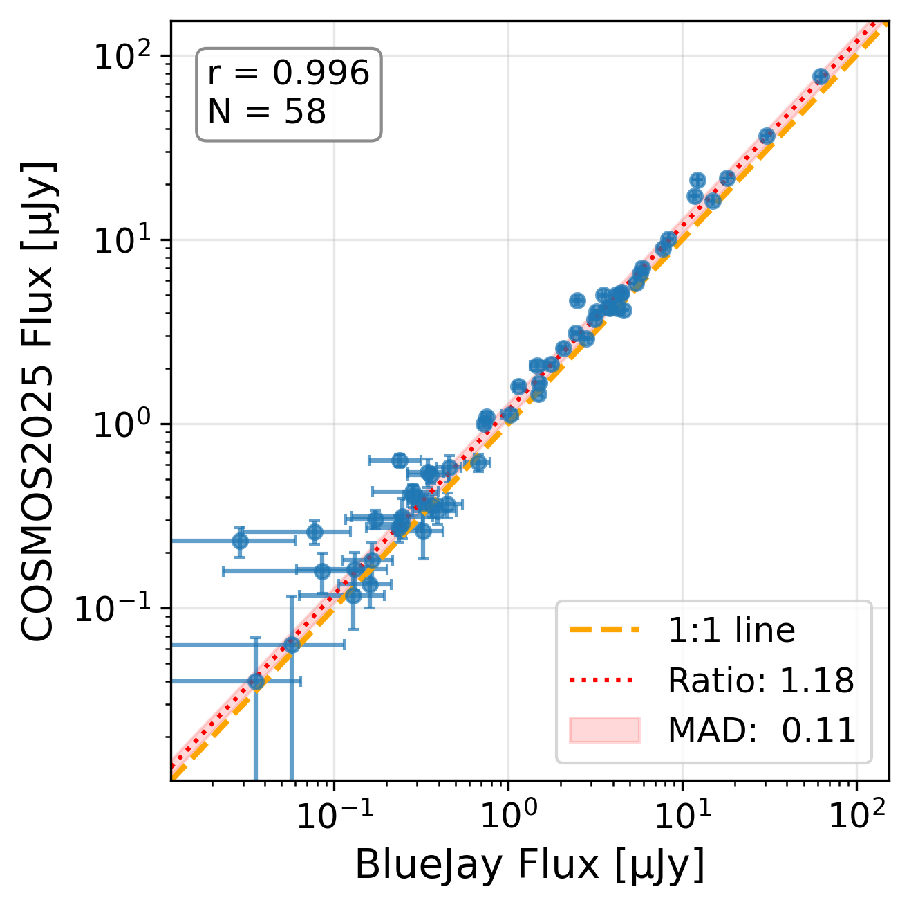
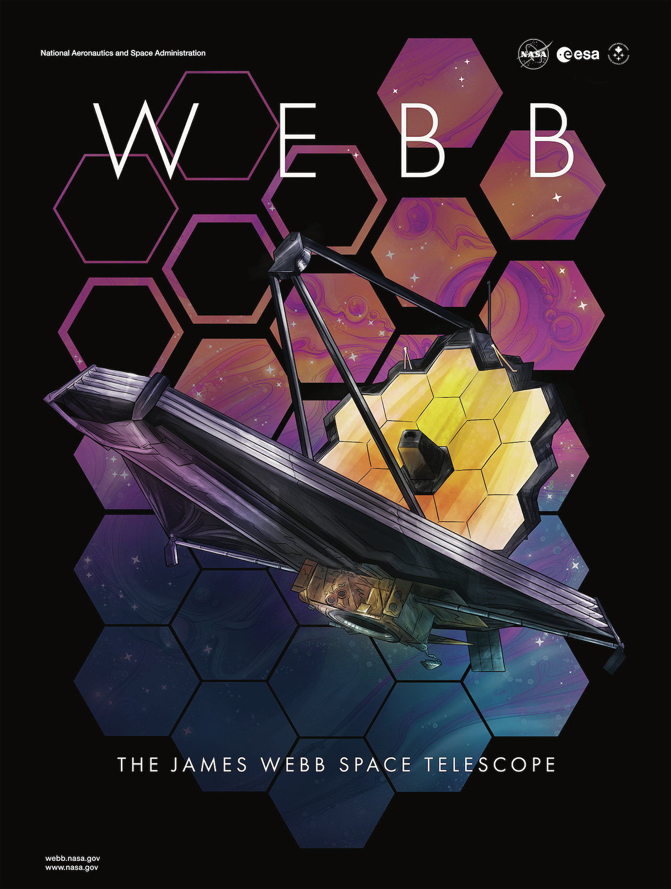
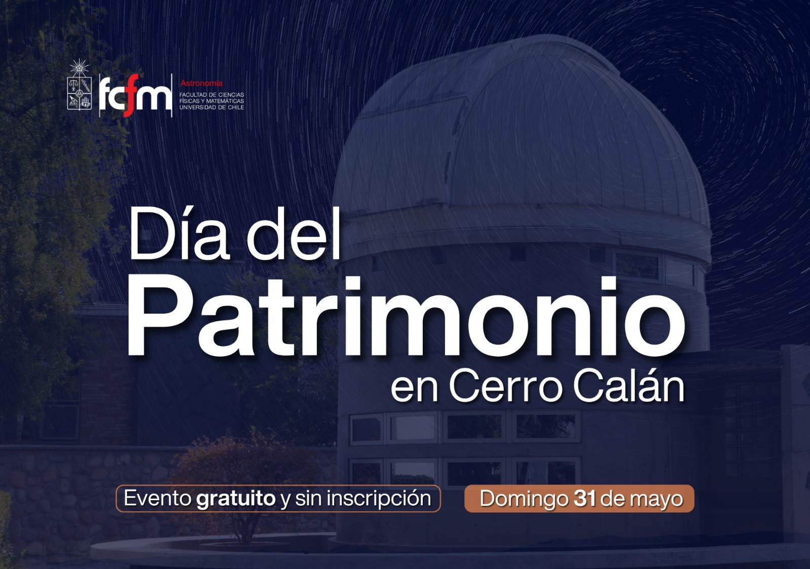
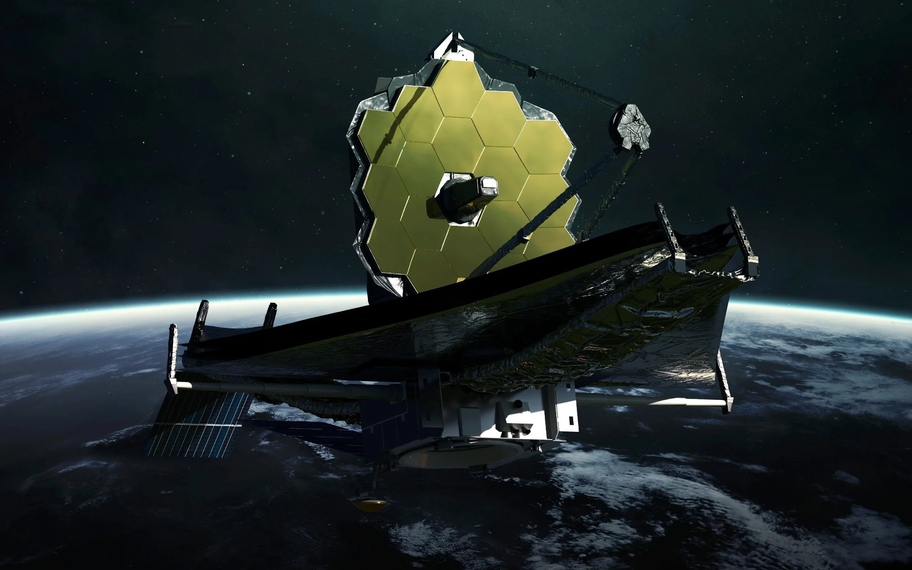
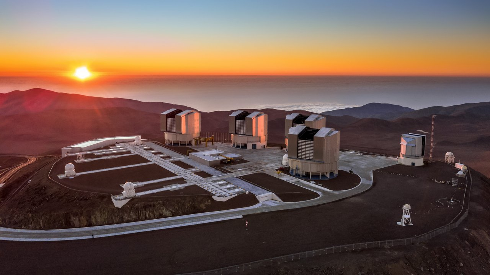

{kind=link}

Observations
Chile serves as the world's capital for observational astronomy, hosting a large number of international telescopes that span optical, infrared, and submillimeter wavelengths.
Departamento de Astronomía (DAS)
Universidad de Chile, Santiago
Hey, I am Benjamin and welcome to my personal website! I am a first-year PhD student in astronomy at Universidad de Chile, where I am studying the evolution of galaxies starting from the epoch of reionisation (EoR). I am also passionate about science communication and outreach, and I am always looking for opportunities to share my love of astronomy with others. Feel free to browse through my website and reach out to me for collaborations or inquiries. You can also use the contact form at the bottom of the page.

Growing up in Austria, I obtained my undergraduate degree in Technical Physics from the Vienna University of Technology (TU Wien) in 2019. I graduated from the master's programme in Astrophysics and Cosmology from the University of Bologna in October 2025. As of March 2026, I am a PhD student in astronomy at Universidad de Chile, where I am part of the extragalactic research group led by Dr. Charlotte Simmonds. My research focuses on topics reaching from constraining dust and ISM properties in galaxies at z > 2 to critical analyses of SED fitting codes and their underlying assumptions. I am also interested in studying the epoch of reionisation (EoR) and the formation of the first galaxies, which I hope to explore in the future using the Atacama Large Millimiter/Submillimeter Array (ALMA) together with the James Webb Space Telescope (JWST). You can learn more about my background here or download my CV by clicking the button below.

My Master's thesis research centred on the study of dust emission in galaxies at Cosmic noon. This period marks a phase
of rapid galaxy assembly in the history of our universe is further characterised by the peak of the cosmic star formation rate density at z ~ 2.
As a member of the Chilean research community, I aim to leverage
the unique multi-wavelength capabilities of Chile's world-class observatories to create a more complete picture of early galaxy assembly in our universe.

I present my work regularly at international conferences and actively participate in summer teaching programmes. My upcoming and past contributions include discussions on dust energy balance at cosmic noon and galaxy evolution in the early universe.

Science is meant to be shared. Here is a glimpse of my journey in science and academic research.

Chile serves as the world's capital for observational astronomy, hosting a large number of international telescopes that span optical, infrared, and submillimeter wavelengths.



In parallel with my research, I actively develop open-access software packages for the community and invest time in teaching the next generation of scientists.
Experienced as a Teaching Assistant in undergraduate courses for industrial and environmental engineers at TU Wien teaching calculus, analysis and algebra through in-person problem-solving classes of up to 40 students.
Developed the advanced Python pipeline miriutils to obtain precision photometry from fully calibrated product-level 3 FITS files of JWST/MIRI observations.
Experienced with SED fitting codes (Bagpipes and Prospector), cosmological simulations (Gadget-2), and processing multi-wavelength datasets through Xspec and CASA.
Passionate about science communication and performing outreach activities in multiple languages (English/Spanish).
If you want to collaborate or have questions about my research or outreach efforts, feel free to send me a message or click any of the icons below!
{kind=link}
{kind=link}
{kind=link}